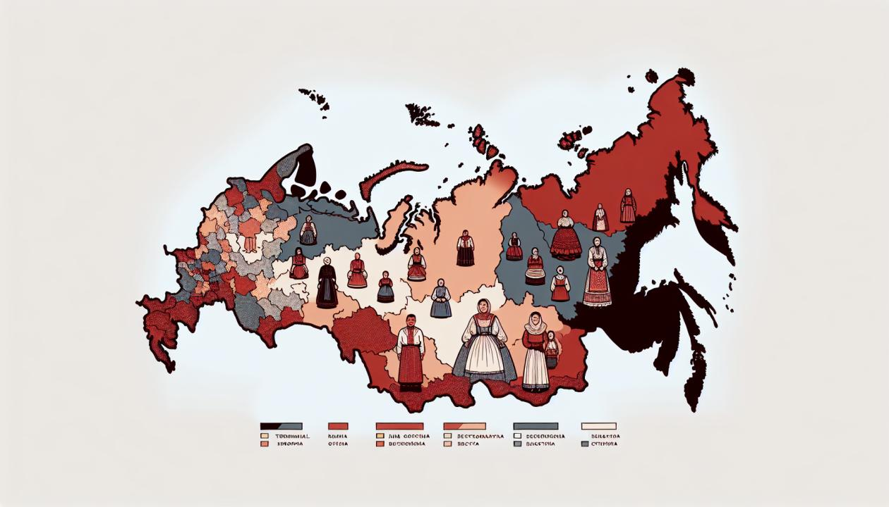

📖 Живое слово земли русской
Диалекты — это не просто «неправильное произношение», а целые языковые миры, хранящие историю, традиции и уникальное мировосприятие народа. В Российской Федерации насчитываются сотни языков и тысячи говоров. Русский язык сам распадается на северное наречие, южное и среднерусские переходные говоры. А языки коренных народов (тюркские, финно-угорские, кавказские, палеоазиатские) демонстрируют удивительное разнообразие, часто превышающее диалектную фрагментацию русского языка.

🗺️ Диалектные зоны России.
🎯 Цель сайта
Представить материал о диалектах в наглядной структурированной форме, привлечь внимание к проблеме исчезновения говоров.
📚 Задачи
Систематизировать информацию, проиллюстрировать различия, создать ресурс для уроков и краеведения.
Русские диалекты: северное и южное наречия
В основе русского литературного языка лежат среднерусские говоры, сочетающие черты севера и юга. Но настоящая диалектная картина намного богаче. Одно и то же понятие на Севере и Юге передаётся разными словами и звучанием.
🗻 Севернорусское наречие
Регионы: Карелия, Архангельская обл., Вологодчина, Урал, Сибирь.
Ключевые черты: оканье (произношение [о] в безударных слогах: м[о]л[о]ко), цоканье/чоканье, твёрдый [г].
Примеры слов: изба (дом), петух (птица), хорошо (одобрительно), ухват (кухонная утварь).
🌾 Южнорусское наречие
Регионы: Тульская, Рязанская, Курская, казачьи области.
Черты: аканье, яканье, фрикативный мягкий [ɣ] (как украинское).
Примеры слов: хата (дом), кочет (петух), добре (хорошо), рогач (ухват).
📊 Таблица: одно понятие — разные диалектные слова
| Понятие (лит. русский) | Севернорусское слово | Южнорусское слово |
|---|
| дом, жилище | изба | хата |
| петух | петух (или пе́вень) | кочет |
| хорошо, красиво | баско | добре |
| ухват (для печи) | ухват (или рогач) | рогач |
| огород | огород | городьба |
| говорить, разговаривать | баять | балакать |
🗣️ Сравнительный словарь (одно значение — разное звучание):
• «Хорошо»: на Севере — баско, на Юге — добре.
• «Петух»: на Севере — петух (или певень), на Юге — кочет.
• «Дом»: на Севере — изба, на Юге — хата.
• «Ухват»: на Севере — ухват, на Юге — рогач.
• «Говорить»: на Севере — баять, на Юге — балакать.
• «Красивый»: на Севере — баской, на Юге — вродный (в рязанских говорах).
🎧 Пример фразы: «Петух красиво поёт» → по-северному: «Петух баско поёт»; по-южному: «Кочет добре співае» (с мягким украинским [г]).
📝 Словарь диалектных слов по регионам
Одно и то же понятие в разных уголках России передаётся по-своему. Ниже — подборка уникальных слов и выражений из семи диалектных зон.
❄️ Севернорусские говоры (Архангельская, Вологодская, Карелия)
| Диалектное слово | Значение (лит. русский) | Пример в речи |
|---|
| баско | хорошо, красиво | «У нас в лесу баско — грибов полно!» |
| зипун | крестьянский кафтан | «Надел зипун да пошёл в поле» |
| рогач | ухват для чугунка | «Подцепи-ка рогачом чугунок» |
| пе́вень | петух | «Певень спозаранку горло дерёт» |
| ве́кша | белка | «Векша по ёлкам скачет» |
| утира́льник | полотенце | «Подай утиральник с гвоздя» |
🌻 Южнорусские говоры (Рязанская, Курская, Воронежская, Дон)
| Диалектное слово | Значение (лит. русский) | Пример в речи |
|---|
| добре́ | хорошо | «Добре́ сделал, сынок!» |
| ко́чет | петух | «Кочет поутру всех разбудил» |
| хата | изба, дом | «В хате печь топится» |
| буря́к | свёкла | «Борщ без буряка не тот» |
| гле́чик | глиняный кувшин | «Молоко в глечике стоит» |
| бала́кать | говорить, разговаривать | «Они меж собой балакают» |
🐎 Татарские диалекты (средний, мишарский, сибирский)
| Диалект | Слово | Значение | Примечание |
|---|
| Средний (казанский) | әйбәт | хорошо | литературная норма |
| Мишарский (западный) | цәй | чай (вместо чәй) | цоканье, как в севернорусском |
| Мишарский | урам | улица | архаичное произношение |
| Сибирско-татарский | пайва | лошадь | заимствование из хантыйского |
| Сибирско-татарский | су | вода | вместо лит. «су́» (с другим тоном) |
🌲 Мордовские языки: эрзя и мокша
| Понятие | По-эрзянски | По-мокшански |
|---|
| дом | кудо | куд |
| в дом (куда?) | кудос | куду |
| вода | ведь | веда |
| мать | ава | тядя |
| отец | тядя | аля |
❗ Эрзя и мокша — два родственных языка, но носители часто переходят на русский, чтобы понять друг друга.
⛰️ Аварский язык (Дагестан) — пример различий диалектов
| Понятие | Литературный аварский | Батлухский диалект | Карахский диалект |
|---|
| вода | лъим | лъин | лъем |
| идти | ине | ине (с другим ударением) | уне |
| дом | гьоркьохъ | гьоркьо | гьоркьохъ (другая интонация) |
📌 В аварском — до 20 падежей, и в разных диалектах их набор может отличаться.
🦌 Хантыйский язык (северные и восточные диалекты)
| Понятие | Северный диалект | Восточный диалект | Южный (почти исчез) |
|---|
| медведь | вой | кат-воч | от |
| рыба | хӯл | кул | хўл |
| олень | вуй | воч | вош |
| вода | иӈк | йиӈк | иӈк (с другим тоном) |
❗ Северные и восточные ханты не понимают друг друга без переводчика.
❄️ Чукотский язык (оленеводческая лексика)
| Диалектное слово | Значение | Примечание |
|---|
| ӄораӈы | олень | основное животное в хозяйстве |
| тыӈаӄаӄ | олень-вожак | уникальное понятие |
| вытвыт | олень-трёхлетка | детализация возраста оленя |
| ӄэԓи | существовать, жить | в разных диалектах — разное произношение |
🐾 В чукотском языке десятки слов для обозначения оленей в зависимости от пола, возраста и окраса.
⚠️ Почему исчезают диалекты?
Диалектное разнообразие России тает с каждым поколением. Основные угрозы:
- Урбанизация и миграция — молодёжь уезжает из сёл в города, где говорят на литературном языке.
- Влияние СМИ и интернета — стандартный русский язык доминирует в телевидении и соцсетях.
- Престиж литературного языка — диалекты часто воспринимаются как «неграмотная» речь.
- Сокращение числа носителей малых языков — многие языки коренных народов находятся на грани исчезновения (кетский — менее 200 чел., некоторые говоры хантыйского почти исчезли).
📉 Статистический факт: по данным ЮНЕСКО, более 10 языков России находятся в критической опасности, среди них алеутский, керекский, орочский, а также многие диалекты эвенкийского и юкагирского языков.
Ценность диалектов — это не только лингвистические редкости, но и тысячелетняя история, традиционное знание природы, уникальная этническая идентичность.
🤝 Как помочь сохранить диалекты?
Каждый из нас может внести вклад в сбережение этого живого наследия. Вот несколько практических шагов:
✅ Записывайте речь старших родственников — расспросите бабушек и дедушек о местных словах, зафиксируйте на диктофон.
✅ Используйте и распространяйте локальные слова в общении со сверстниками, на уроках.
✅ Участвуйте в краеведческих проектах и фольклорных экспедициях.
✅ Создавайте мини-словарики своего села или города — публикуйте в соцсетях.
✅ Поддерживайте учебные инициативы по изучению языков коренных народов (кружки, факультативы).
Наш сайт — тоже пример такой помощи: он может использоваться на уроках русского языка, литературы, краеведения, а также для внеклассных мероприятий. Созданный продукт — полноценный веб-ресурс в цветовой гамме «слоновой кости» с терракотовыми акцентами, единой навигацией и адаптивным дизайном.
🔮 Перспективы развития: добавление аудиозаписей живой диалектной речи, расширенные словари, интерактивная карта диалектов и размещение в открытом доступе для учителей и школьников.